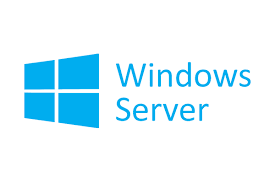

LAMP-(Linux, Apache, MySQL, [PHP|Perl|Python])
Esta plataforma web promocionado por el editor de la editorial O’Reilly Dale Dougherty y algunos autores de MySQL es el más popular y el que podrás encontrar más fácilmente en la mayoría de los proveedores de Hosting.
Ventajas
• Disponibilidad y bajos costos
• Velocidad y mejor tiempo de actividad según la empresa WatchMouse (especialista en comportamiento y la disponibilidad de websites) en un estudio de rendimiento realizados a más de 1500 websites se determinó que los sitios web basados en Linux eran más rápidos que los basados en Windows.
• Es muy fácil colocar instrucciones tanto en nuestro código para activar nuevas funcionalidades del servidor.
• Si estás pensando en elegir un CMS (Sistema Gestor de contenido), los mejores como Drupal, Joomla y WordPress están optimizados para esta plataforma.
• Servidor de bases de datos relacional MySQL muy rápido para consultas de lectura y sitios no demasiado grandes.
Desventajas
• No muy buen rendimiento de MySQL para sitios web demasiado grandes y con un gran volumen de inserción de datos.
• Al estar basado en Linux, debes tener un conocimiento previo acerca de los comandos, la interfaz, ya que es complemente diferente a Windows.
WAMP - (Windows, Apache, MySQL, [PHP|Perl|Python)
A nivel de programación no existen diferencias con un sistema
LAMP, sí que existen diferencias a nivel de administración.
Existe un software llamado WAMP5 que instala de forma compacta y configura fácilmente toda la plataforma WAMP.
Ventajas
• Ideal para utilizar como servidor de desarrollo
• Fácil instalación con el software WAMP5.
Desventajas
• Puedes tener alguna dificultad a la hora de instalar los
subsistemas por separado. A mí siempre me ha dado guerra la instalación de PHP en IIS.
LAMDA - (Linux, Apache, Mono|Maverick.NET, DB4O, ActiveRecord)
Ventajas
• Es más flexible porque soporta múltiples bases de datos ya
que mediante DB4O la base de datos orientada a objetos se puede abstenerse del mundo relacional.
• Es más robusta porque los lenguajes más convenientes a utilizar con Mono son estáticamente tipados y permite tener una plataforma de desarrollo multiplataforma.
• El framework “Maverick.NET” pueden funcionar tanto con Mono como con el framework de .NET de Microsoft.
XAMPP - (X=Cualquier S.O, Apache, MySQL, PHP, [Perl Python])
XAMPP podría decirse que más que una plataforma web es un
software que instala de forma compacta y configura fácilmente PHP, MySQL y Apache para Windows, Linux, San Solaris y Mac OS X.
También se puede decir entonces que WAMP es una variante de XAMPP.
WXCF - (Windows, X=[Apache|IIS], ColdFusion)
Coldfusion es un servidor de páginas, una herramienta y un lenguaje de programación que permite programar páginas web fácilmente a través de etiquetas similares a HTML y que puede instalarse además de Windows en Mac OS X, Linux y Solaris. Actualmente pertenece a Adobe y anteriormente a Macromedia.
Ventajas
• En la instalación de Coldfusion permite elegir sobre que
servidor web va a correr (Apache o IIS).
• Funciones poderosas para leer y escribir en discos duros del servidor basadas en tags.
• Integra varias tecnologías.
• Programación muy fácil a través de etiquetas o tags.
• Integración con Java.
• Amplias opciones para la configuración del servidor y en modo gráfico.
Desventajas
• Pocos proveedores de hosting ofrecen este tipo de plataforma
web
• Servidor inestable que es capaz de soportar muy poca carga, aunque fue diseñado para sitios grandes y con mucho tráfico
• Integra varias tecnologías
• Programación muy fácil a través de etiquetas o tags.

XATMJ - (X=Cualquier S.O, Apache, Tomcat, MySQL, JSP)
Este tipo de plataforma web tampoco es muy común encontrarla en
los proveedores de hosting más populares.Tomcat es un servidor web con soporte de servlets y JSPs de Sun Microsystem y que normalmente es combinado con el servidor web Apache, aunque puede funcionar por sí sólo. Si vas a realizar páginas web en JSP esta es la mejor opción.
Ventajas
• Funciona en cualquier sistema operativo que disponga de la
máquina virtual Java
• Tomcat es que es muy fiable.
Desventajas
• Tomcat sólo puede trabajar con un único servidor; no puede
utilizarse en clústers.
• Tomcat no dispone de un entorno integrado con una sofisticada GUI.
WIMA - (Windows, IIS, MS SQL Server, ASP.NET)
Este sistema junto a LAMP es de los más utilizados para
desarrollar aplicaciones web basadas en ASP clásico y ASP.NET.También se puede instalar PHP o Perl bajo IIS, y es la forma en la que los proveedores de hosting ofrecen ASP y PHP en el mismo servidor.
Ventajas
• MS SQL Server tiene un potente entorno gráfico de
administración
• MS SQL Server ofrece a múltiples usuarios grandes cantidades de datos de manera simultánea
• ASP.NET, a partir de la versión 2.0 es una gran ventaja.
• Para mí, esta plataforma web es la mejor opción para crear aplicaciones web hoy en día.
Desventajas
• El servidor IIS no es multiplataforma, sólo funciona bajo
Windows
• El servidor MS SQL Server tampoco es multiplataforma.
• Limitaciones en IIS en las versiones que no son de la familia “Server”
• Vulnerabilidades.

APPSERV
Es un programa que aúna una serie de aplicaciones y utilidades,
de manera que, al instalarlo, no solo tendremos instalados todo esto, sino que, además estarán perfectamente configurados y listos para usarlos en cuestión de minutos, mientras que, si tuviésemos que instalar por separado estos programas, deberíamos dedicarle mucho más tiempo a su correcta configuración.
Pero ¿qué aplicaciones nos instala este paquete?
• Apache
• PHP
• MySQL
• PhpMyAdmin
BITNAMI.
Probablemente, una de las opciones más cómodas e interesantes sea
BitNami. Se trata de una colección de aplicaciones web comunes, donde puedes encontrar algunas como Wordpress, Drupal, Ghost, Django, Moodle y tantas otras.
Cada paquete viene preparado independientemente, por lo que sólo tienes que descargarlo e instalarlo. Fácil y rápido. También está preparado para instalar en entornos virtualizados o en servidores basados en la nube, como Amazon o Azure.

NMP SERVER.
Si lo que te interesa es un micro servidor eficiente, pequeño y
portable, lo tuyo es NMP Server (Nginx + MySQL + PHP). En lugar de Apache, incorpora el eficiente servidor web Nginx, junto a bases de datos MySQL y soporte PHP mediante PHP-CGI. Todo ello bajo Windows.
Incorpora un editor rápido de pares de claves, donde podemos modificar los valores de configuración de PHP.